From English and Krio to Temne, Mende, Limba, and other indigenous tongues, language connects families, history, and culture across the nation.
Sierra Leone is a multilingual nation where over 20 languages are spoken across its diverse ethnic groups. While English serves as the official language used in government, education, and media, the true heartbeat of daily communication beats in Krio — the widely spoken lingua franca that unites all Sierra Leoneans. Regional languages like Temne, Mende, Limba, and Kono carry centuries of tradition, oral history, and cultural identity, each adding its unique voice to the nation's rich tapestry.
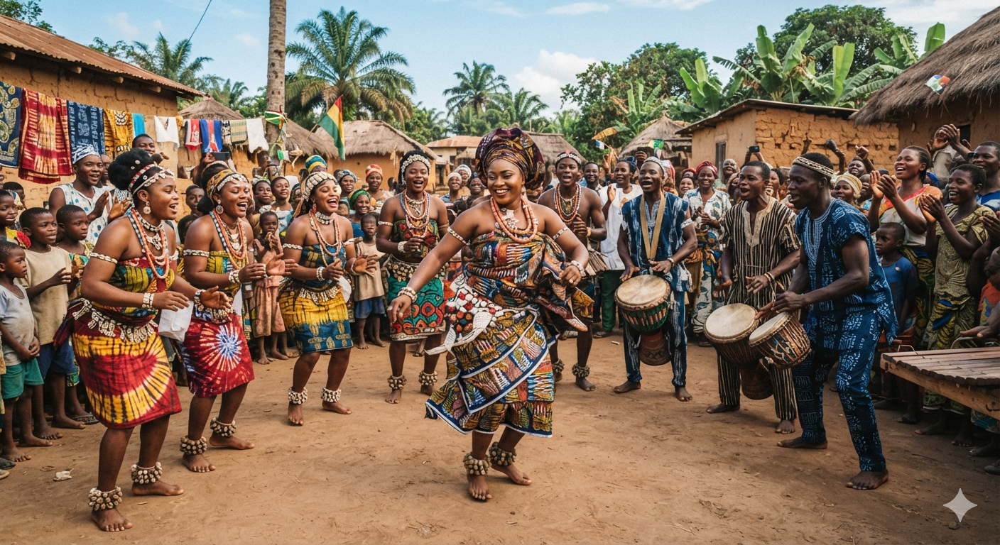
The Mende are one of the largest ethnic groups in Sierra Leone and are mainly found in the Southern and Eastern Provinces. They speak the Mende language, which belongs to the Mande language family. The Mende are known for their strong sense of community, rich storytelling traditions, music, drumming, and dance. Their famous Sowei mask, used by the Sande society during initiation ceremonies, is one of the country's most recognized cultural symbols. Traditional clothing is commonly worn during festivals, weddings, and important cultural events.
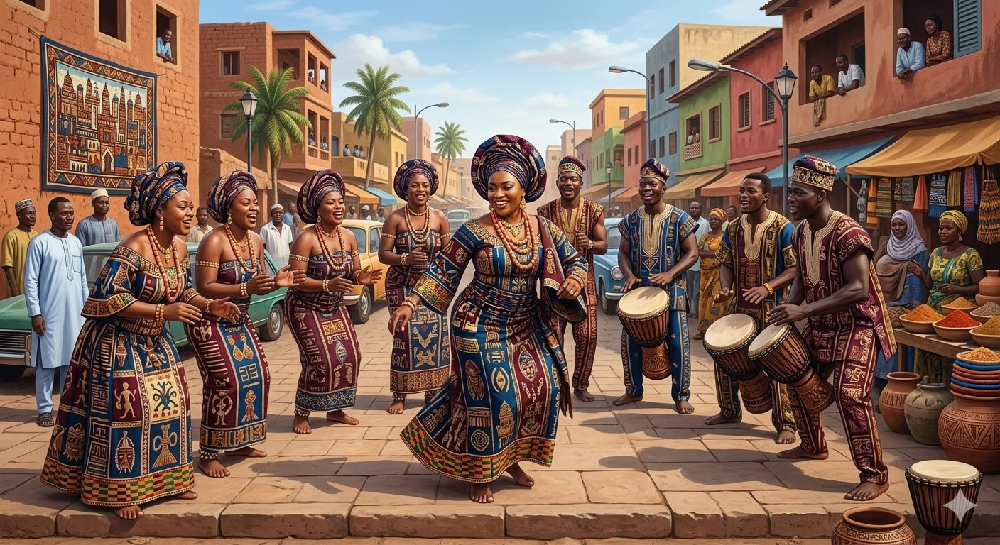
The Temne are one of the largest ethnic groups in Sierra Leone and primarily inhabit the Northern Province and parts of the Western Area. They speak the Temne language and have a long history of farming, fishing, and trade. The Temne are known for their traditional music, colorful ceremonies, and strong family values. Cultural dances and traditional attire are proudly displayed during festivals, weddings, and community celebrations.
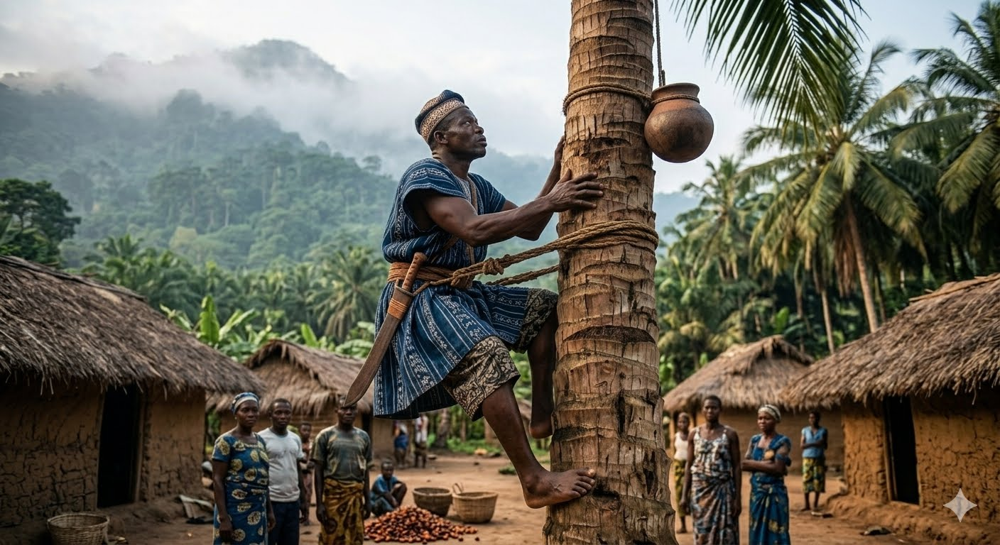
The Limba are among Sierra Leone's oldest indigenous ethnic groups and are mainly found in the Northern Province. They speak the Limba language and have a rich oral tradition passed down through generations. Agriculture is central to Limba life, and they are known for cultivating rice, cassava, and other crops. Their traditional dances and ceremonies remain an important part of their cultural identity.
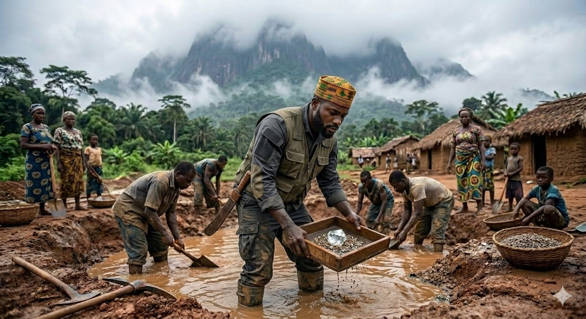
The Kono people mainly live in the Eastern Province, particularly in Kono District. They speak the Kono language and are widely known for living in Sierra Leone's diamond-producing region. Beyond mining, the Kono have a rich culture that includes traditional music, dance, storytelling, and ceremonies celebrating family and community life.
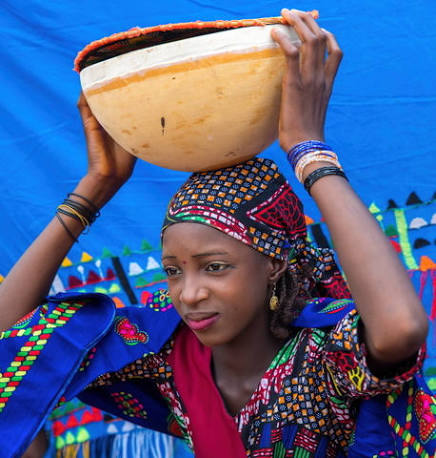
The Fullah (Fulani) are found throughout Sierra Leone and are well known for their contributions to trade, cattle herding, and Islamic scholarship. They speak Fulfulde and are respected for their hospitality and entrepreneurial spirit. Traditional Fulah clothing is often brightly colored and beautifully embroidered, especially during religious celebrations and festivals.
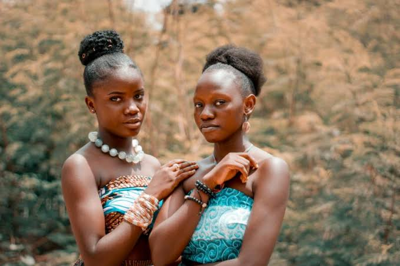
The Loko people mainly inhabit the Northern Province and speak the Loko language. They have a long history of farming and craftsmanship. Loko communities celebrate their heritage through traditional dances, storytelling, music, and ceremonies that strengthen family and community bonds.
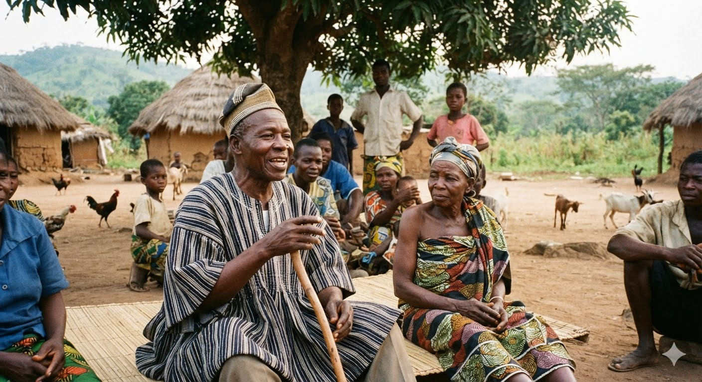
The Koranko are primarily found in the northern and northeastern parts of Sierra Leone. They speak the Koranko language and have a rich tradition of farming, hunting, and trade. Their vibrant cultural festivals feature drumming, dancing, and colorful traditional clothing that reflects their heritage.
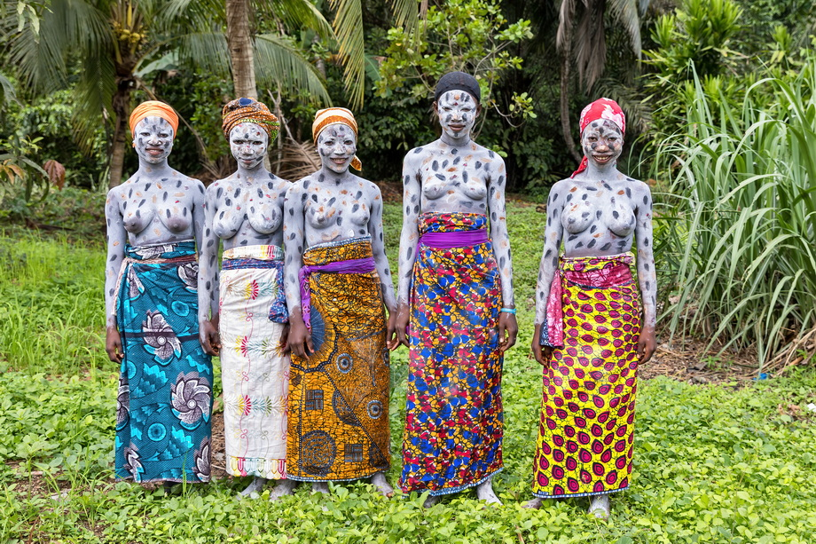
The Sherbro people live mainly along Sierra Leone's southern coast and on Sherbro Island. They speak the Sherbro language and have a close connection to the sea, with fishing forming an important part of their livelihood. Sherbro culture includes traditional music, ceremonies, and folklore that have been preserved for generations.
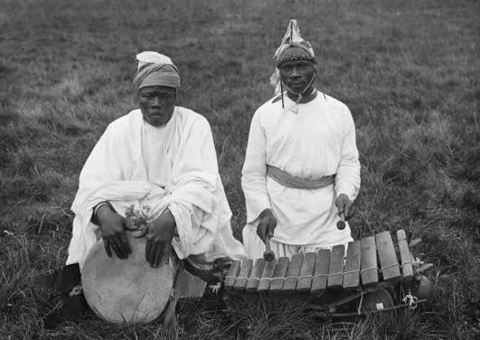
The Susu people are mainly found in the northwestern part of Sierra Leone near the Guinean border. They speak the Susu language and have a long tradition of commerce and agriculture. Their cultural celebrations feature lively drumming, dancing, and traditional attire worn during festivals and family occasions.
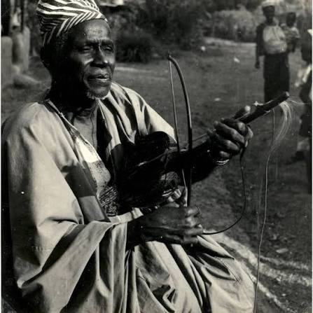
The Yalunka are primarily found in northern Sierra Leone and speak the Yalunka language. They are traditionally farmers and traders who value family, hospitality, and community cooperation. Their cultural identity is celebrated through music, dance, storytelling, and religious festivals.
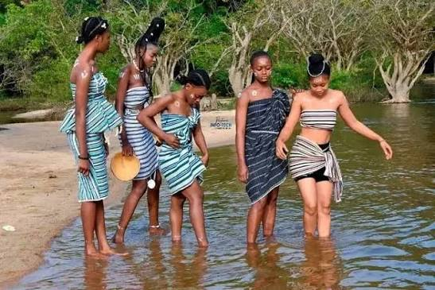
The Kissi people mainly inhabit the southeastern region of Sierra Leone near the borders with Liberia and Guinea. They speak the Kissi language and are known for rice farming and traditional craftsmanship. Kissi culture is rich in folklore, music, and ceremonies that celebrate their history and close relationship with nature.
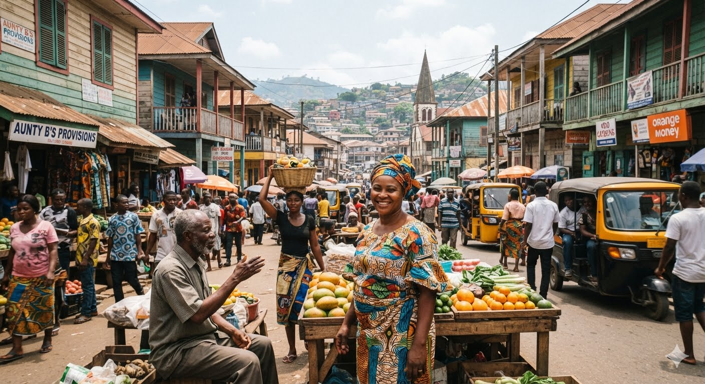
The Krio people are descendants of freed African slaves who settled in Freetown during the late eighteenth and early nineteenth centuries. They speak Krio, the country's most widely spoken lingua franca, which helps unite people from different ethnic backgrounds. The Krio are known for their unique architecture, cuisine, music, Christian traditions, and major contributions to Sierra Leone's history, education, and commerce.
Language is the road map of a culture. It tells you where its people come from and where they are going.— Rita Mae Brown